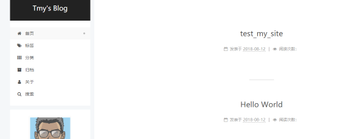
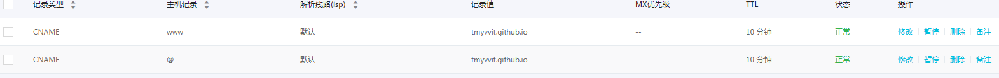

利用github和hexo建立个人博客
1. 依赖
- GitHub账号
- 本地Git安装
- 本地Node.js，Hexo安装
2. 博客搭建
hexo安装
由于之前已经在本地安装好了git和Node.js，所以只需要安装Hexo即可
1 | $ npm install -g hexo-cli |
等待安装成功。
在本地创建博客目录
1 | $ hexo init blog |
Hexo安装成功之后，即可创建博客。选择一个文件夹，打开bash，输入上面的命令就可在当前文件夹下新建名为blog的博客文件夹，并初始化。
现在可以执行下述命令：
1 | $ hexo g |
然后在浏览器中输入地址localhost:4000即可查看博客

在github中建立新仓库
在github建立新仓库 tmyvvit.github.io 。打开博客根目录下的配置文件_config.yml，在末尾添加以下代码
1 | deploy: |
然后重新推送部署
1 | $ hexo clean |
，就可以在浏览框中输入地址tmyvvit.github.io来访问博客。
绑定域名
我在阿里云买了一个域名tmyxyz.xyz， 现在要将这个域名绑定在Github提供的域名上面。进入阿里云域名管理控制台，找到个性化域名并设置解析

下一步在Github上进入刚才新建的仓库，点击Setting，设置Custom domain为tmyxyz.xyz
然后在本地博客blog/source目录下创建一个名为CNAME的文件，内容为个性化域名。然后重新推送部署就可以根据个性化域名进入我的博客。
3 hexo基本指令
init
1 | $ hexo init [folder] |
新建一个网站，没有设置folder则在当前文件夹建立网站
new
1 | $ hexo new [layout] <title> |
新建文章，layout 默认为配置文件_config.yml中的default_layout参数
| 布局 | 路径 |
|---|---|
| post | source/_posts |
| page | source |
| draft | source/_drafts |
generate
1 | $ hexo [-d][-w] generate |
生成静态文件，选项-d,--deploy文件成成后立即部署网站，选项-w,--watch监视文件变动，命令可以简写为
1 | $ hexo g |
publish
1 | $ hexo publish [layout] <filename> |
发表草稿，将草稿转为post。
server
1 | $ hexo server |
启动服务器。默认http://localhost:4000
| 选项 | 描述 |
|---|---|
| -p, –port | 重设端口 |
| -s, –static | 只使用静态文件 |
| -l, –log | 启动日记记录，使用覆盖记录格式 |
deploy
1 | $ hexo [-g, --generate] deploy |
部署网站，选项-g, --generate部署前预先生成静态文件
clean
1 | $ hexo clean |
清除缓存文件（db.json）和已经生成的静态文件（public）。
在某些情况下（尤其是更换主题），如果对站点的更改不生效，则可以运行该指令。